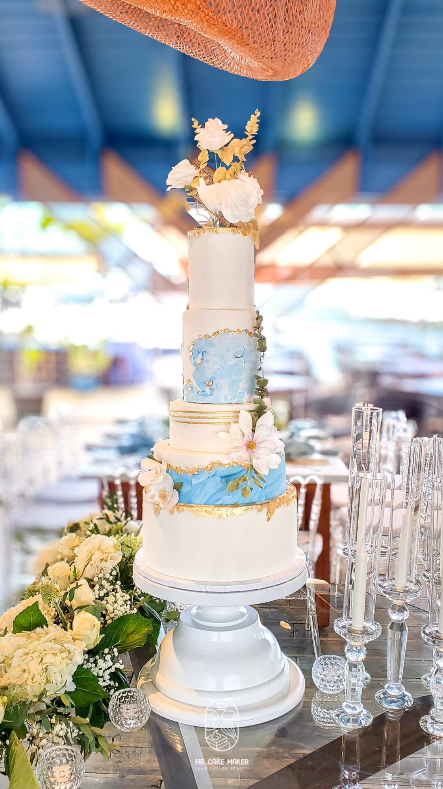

Most couples planning a destination wedding in the Dominican Republic spend months researching venues, photographers, and floral designers — and then treat the wedding cake as an afterthought. This guide is for the couples who know better.
The Real Question International Couples Are Asking
When you're planning a wedding from another country, trust is everything. You can't walk into a studio, taste a sample, or assess the quality in person before making a decision. So the question isn't really "who makes beautiful cakes in the DR?" — it's "how do I know this person is the real deal?"
That's a fair question. And it's one I'm happy to answer directly.
Food Network Canada
My professional background earned me a spot as a contestant on The Big Bake — competing alongside an international team, all the way in Canada.
ServSafe Certified
International food safety standard. Not common in the Dominican market — non-negotiable for me.
Formally Trained
Classical culinary background in a market where most decorators are self-taught. The difference shows in every piece.
A Real Story: From Montreal to Juan Dolio
A couple — she Dominican, he from Quebec — were planning their wedding in Juan Dolio when her family started presenting the usual options: classic, traditional, predictable. She knew she wanted something different. Something she'd seen on television.
They had watched The Big Bake on Food Network Canada — and when they realized I was the same person, something clicked. They booked on the spot. No back-and-forth, no hesitation. They flew in for a tasting, and that's when everything came together — not just the design, but the flavor direction. Unexpected combinations. Nothing off a standard menu.



The result was a five-tier cake that carried the Caribbean coast into every detail: blue marble fondant, hand-applied gold leaf, hand-crafted sugar orchids, and a design built entirely around their story — not a reference image from Pinterest.
One year later, they hired me again — this time for their anniversary. And because the connection we built went beyond a transaction, I gifted them the anniversary cake. That's the kind of relationship I build with the couples I work with.
How the Process Works From Abroad
Working with an international couple is something I do intentionally — not as an exception. The process is designed to give you clarity and confidence at every step, whether you're in Canada, the US, or anywhere else.
Inquiry & First Conversation
You fill out the wedding form with the basics — date, venue, vision, guest count. I review it and we schedule a video call. This is where we start building the concept together, not from a catalog.
Concept Development
I develop a custom design based on your story, your aesthetic, and your venue. You receive a digital mockup — and we refine it until it's exactly right. The cake you approve is the cake you receive.
Tasting — In-Person or Curated
If you're visiting the DR before your wedding, we schedule a tasting in Santo Domingo. If not, I guide you through flavor selection with a curated recommendation — including options you won't find anywhere else.
Confirmation & Lead Time
A 50% deposit confirms your date. Lead time for destination wedding cakes starts at 3 months — this ensures every detail is built with the precision your cake deserves.
Delivery & Setup
I handle transport and setup at your venue personally. The cake arrives exactly as designed — that's not a promise, it's how every single piece leaves this studio.
Where in the Dominican Republic Do You Work?
Based in Santo Domingo, I serve couples across the island — including the most popular destination wedding locations:
Each venue has its own character. The design we build together will honor that — and wherever your wedding is, the cake will be delivered and set up by my team.
"The most beautiful cake at an event is the one nobody expected."
What to Look for When Choosing a Cake Designer in the DR
The Dominican Republic has talented decorators. But if you're planning an international destination wedding, here's what to look for beyond a beautiful Instagram feed:
- Verifiable credentials. Can you look them up independently? A television appearance, a certification, a professional background — these aren't vanity details. They're proof of standard.
- A clear process. A professional designer should be able to walk you through exactly how they work — from concept to delivery — before you commit to anything.
- Food safety knowledge. Your guests will eat this cake. ServSafe certification means the person making it understands temperature, storage, and safety at an international standard.
- Original design, not references. If a designer's first question is "what reference image do you have?" — keep looking. The best cake for your wedding hasn't been made yet.
Tell me your story.
I'll take it from there.
Tell me about your wedding — venue, date, and a little about who you are. The design starts with that conversation.
Begin Your Wedding Inquiry